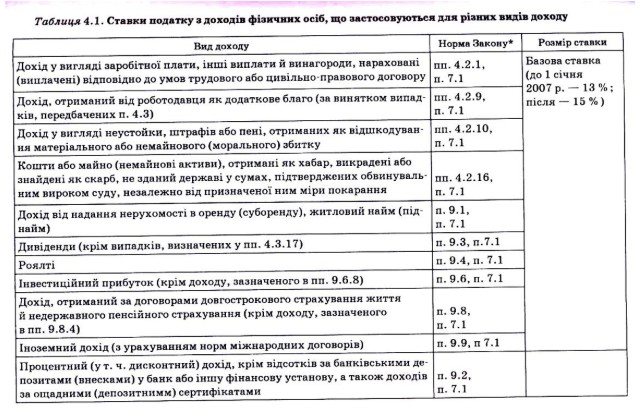

Створити HTML-таблицю на основі зразка.
| Вид доходу | Норма Закону* | Розмір ставки |
|---|---|---|
| Дохід у вигляді заробітної плати, інші виплати й винагороди... | пп. 4.2.1, п. 7.1 | Базова ставка (до 1 січня 2007 р. — 13 %; після — 15 %) |
| Дохід, отриманий від роботодавця як додаткове благо... | пп. 4.2.9, п. 7.1 | |
| Дохід у вигляді неустойки, штрафів або пені... | пп. 4.2.10, п. 7.1 | |
| Кошти або майно (немайнові активи), отримані як хабар... | пп. 4.2.16, п. 7.1 | |
| Дохід від надання нерухомості в оренду (суборенду)... | п. 9.1, п. 7.1 | |
| Дивіденди (крім випадків, визначених у пп. 4.3.17) | п. 9.3, п. 7.1 | |
| Роялті | п. 9.4, п. 7.1 | |
| Інвестиційний прибуток (крім доходу, зазначеного в пп. 9.6.8) | п. 9.6, п. 7.1 | |
| Дохід, отриманий за договорами довгострокового страхування життя... | п. 9.8, п. 7.1 | |
| Інші доходи (з урахуванням норм міжнародних договорів) | п. 9.9, п. 7.1 | |
| Проценти (у т.ч. дисконтні) доходи за банківськими депозитами... | п. 9.2, п. 7.1 |